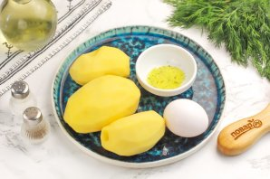

Подготовьте указанные продукты. Картофель приобретайте желтый или розовый — он отлично пропекается и не остается жестким. Очистите корнеплоды от кожуры и промойте в воде.
Картофель натрите в глубокую емкость: миску или салатник на терке с крупными ячейками. Оставьте массу на 5-6 минут и затем отожмите образовавшийся сок.
Вбейте куриное яйцо. По желанию можно всыпать измельченную зелень укропа, петрушки и т.д. Всыпьте приправу и молотый черный перец. Тщательно все вымешайте.
Застелите поддон аэрогриля пергаментной бумагой и смажьте ее растительным маслом. Выложите части натертого картофеля и прижмите их, чтобы они были одинаковыми по толщине.
Запеките при 180 градусах примерно 7-8 минут до румяности. Если мощности вашей техники будет недостаточно, то дозапеките еще 1-2 минуты. Помните, что время запекания напрямую зависит от сорта картофеля и толщины драников.
Выложите румяные золотистые драники на тарелку со сметаной или другим соусом и подайте к столу. Приятного вам аппетита!